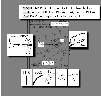
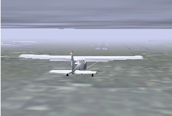

First: in principle everything that applies to real helicopters, applies to FlightGear.
Fundamental maneuvers are well described here:
http://www.cybercom.net/˜copters/pilot/maneuvers.html Some details are simplified in
FlightGear, in particular the engine handling and some overstresses are not simulated or
are without any consequence. In FlightGear it is (up to now) not possible to damage a
helicopter in flight.
The helicopter flight model of FlightGear is quite realistic. The only exceptions are “vortex ring conditions”. These occur if you descend too fast and perpendicularly (without forward speed). The heli can get into its own rotor downwash causing the lift to be substantially reduced. Recovering from this condition is possible only at higher altitudes. On the Internet you can find a video of a Seaking helicopter, which got into this condition during a flight demonstration and touched down so hard afterwards that it was completely destroyed.
For all FlightGear helicopters the parameters are not completely optimized and thus the performance data between model and original can deviate slightly. On the hardware side I recommend the use of a “good” joystick. A joystick without springs is recommended because it will not center by itself. You can either remove the spring from a normal joystick, or use a force feedback joystick, with a disconnected voltage supply. Further, the joystick should have a “thrust controller” (throttle). For controlling the tail rotor you should have pedals or at least a twistable joystick - using a keyboard is hard. FlightGear supports multiple joysticks attached at the same time.
The number of available helicopters in FlightGear is limited. In my opinion the Bo105 is the easiest to fly, since it reacts substantially more directly than other helicopters. For flight behavior I can also recommend the S76C. The S76C reacts more retarded than the Bo.
Once you have loaded FlightGear, take a moment to centralize the controls by moving them around. In particular the collective is often at maximum on startup.

The helicopter is controlled by four functions. The stick (joystick) controls two of them, the inclination of the rotor disc (and thus the inclination of the helicopter) to the right/left and forwards/back. Together these functions are called “cyclic blade control”. Next there is the “collective blade control”, which is controlled by the thrust controller. This causes a change of the thrust produced by the rotor. Since the powering of the main rotor transfers a torque to the fuselage, this must be compensated by the tail rotor. Since the torque is dependent on the collective and on the flight condition as well as the wind on the fuselage, the tail rotor is also controlled by the pilot using the pedals. If you push the right pedal, the helicopter turns to the right (!). The pedals are not a steering wheel. Using the pedals you can yaw helicopter around the vertical axis. The number of revolutions of the rotor is kept constant (if possible) by the aircraft.

First reduce the collective to minimum. To increase the rotor thrust, you have to “pull” the collective. Therefore for minimum collective you have to push the control down (that is the full acceleration position (!) of the thrust controller). Equally, “full power” has the thrust controller at idle. Start the engine with }. After few seconds the rotor will start to turn and accelerates slowly. Keep the stick and the pedals approximately centered. Wait until the rotor has finished accelerating. For the Bo105 there is an instruments for engine and rotor speed on the left of the upper row.
Once rotor acceleration is complete, pull the collective very slowly. Keep your eye on the horizon. If the heli tilts or turns even slightly, stop increasing the collective and correct the position/movement with stick and pedals. If you are successful, continue pulling the collective (slowly!).
As the helicopter takes off, increase the collective a little bit more and try to keep the helicopter in a leveled position. The main challenge is reacting to the inadvertent rotating motion of the helicopter with the correct control inputs. Only three things can help you: practice, practice and practice. It is quite common for it to take hours of practice to achieve a halfway good looking hovering flight. Note: The stick position in a stable hover is not the center position of the joystick.
To avoid the continual frustration of trying to achieve level flight, you may want to try forward flight. After take off continue pulling the collective a short time and then lower the nose a slightly using the control stick. The helicopter will accelerate forward. With forward speed the tail rotor does not have to be controlled as precisely due to the relative wind coming from directly ahead. Altogether the flight behavior in forward flight is quite similar to that of an badly trimmed airplane. The “neutral” position of the stick will depend upon airspeed and collective.
Transitioning from forward flight to hovering is easiest if you reduce speed slowly by raising the nose of the helicopter. At the same time, reduce the collective to stop the helicopter from climbing. As the helicopter slows, “translation lift” is reduced, and you will have to compensate by pulling the collective. When the speed is nearly zero, lower the nose to the position it was when hovering. Otherwise the helicopter will accelerate backwards!
To land the helicopter transition to a hover as described above while reducing the altitude using the collective. Briefly before hitting the ground reduce the rate of descent slowly. A perfect landing is achieved if you managed to zero the altitude, speed and descent rate at the same time (gently). However, such landing are extremely difficult. Most pilots perform a hover more or less near to the ground and then decent slowly to the ground. Landing with forward velocity is easier, however you must make sure you don’t land with any lateral (sideways) component to avoid a rollover.
It is worth mentioning autoration briefly. This is a unpowered flight condition, where the flow of air through the rotors rotates the rotor itelf. At an appropriate altitude select a landing point (at first in the size of a larger airfield) and then switch the engine off by pressing {. Reduce collective to minimum, place the tail rotor to approximately 0∘ incidence (with the Bo push the right pedal about half, with As350 the left). Approach at approximately 80 knots. Don’t allow the rotor speed to rise more than a few percent over 100%, otherwise the rotor will be damaged (though this is not currently simulated). As you reach the ground, reduce the airspeed by lifting the nose. The descent rate will drop at the same time, so you do not need to pull the collective. It may be the case that the rotor speed rises beyond the permitted range. Counteract this by raising the collective if required. Just above the ground, reduce the descent rate by pulling the collective. The goal is it to touch down with a very low descent rate and no forward speed. With forward speed it is easier, but there is a danger of a roll over if the skids are not aligned parallel to the flight direction. During the approach it is not necessary to adjust the tail rotor, since without power there is almost no torque. If you feel (after some practice), that autorotation is too easy, try it with a more realistic payload via the payload menu.